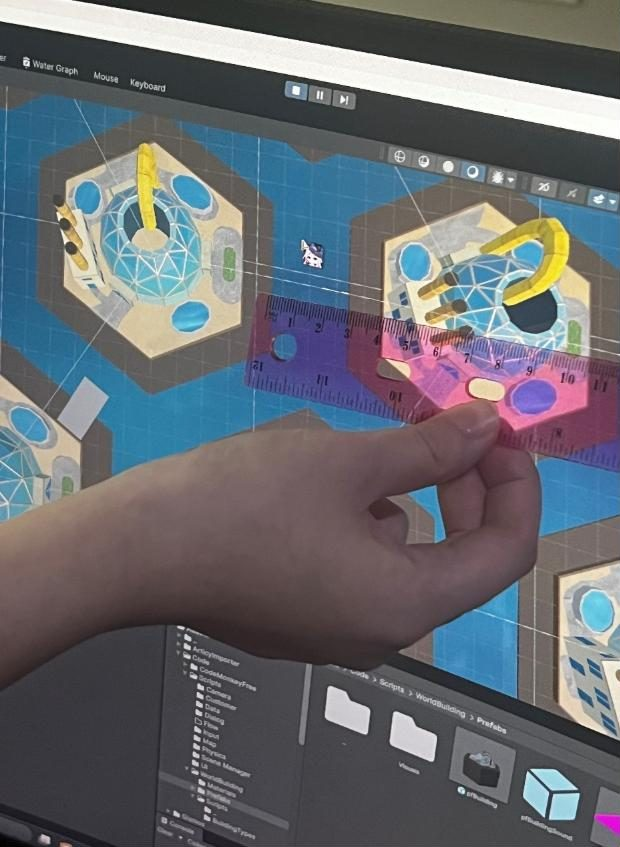
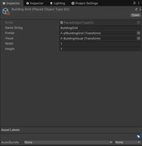
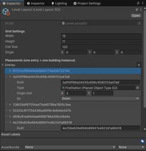
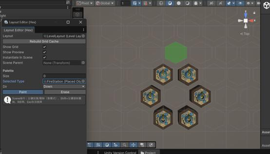
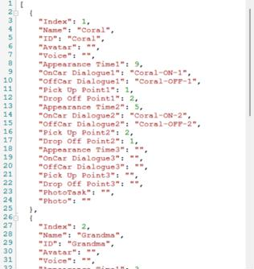
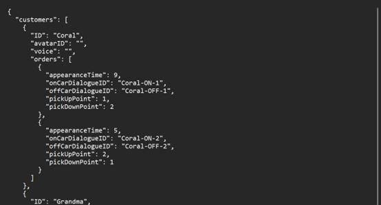
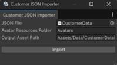
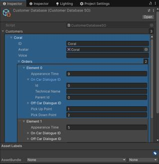

Summary
From MVP to Alpha, I adjusted many features.
Cockpit UI and Camera
I worked with the artist to redesign the UI. We repeatedly tested the driving camera view to check whether it felt reasonable, and whether the layout was wide and comfortable enough.
World Generation: Hex Grid
- I created a hex grid for the world and placed buildings at the center of each cell. This setup is mainly for future auto-driving and pathfinding, and it also makes the world easier to edit and expand.
- I followed CodeMonkey's approach for the hex grid: only handling the hex centers and row/column offsets, without actually drawing hex shapes.
- When setting the spacing between rows and columns, I didn't calculate it mathematically. I used a very basic method and adjusted values directly by measuring on screen. Hopefully my curved monitor didn't introduce too much error.


Building types and layouts are stored in specific ScriptableObjects.




With ChatGPT's help, I also built a more visual level layout tool. I can now paint buildings directly and save the data.


Right now, the building system does not automatically create docks or connecting bridges. I plan to add this in the next phase.
Dialogue Data Pipeline
- I created a data table for narrative content, which the narrative designer fills in.
- We export it to JSON with excel2json, then I ask ChatGPT to reorganize the data into the format I need.





I know we could store all character data directly in articy:draft templates or write a custom Excel-to-JSON script, but both require extra learning time. Since our data size is still small, this workflow is acceptable for now.
With ChatGPT's help, I also created an import tool that converts JSON into Customer ScriptableObjects.




After that, I read the data in code and added time-based events to spawn different orders at different times and switch dialogue based on passenger progress.
Photo Feature
I added a photo feature after dialogue. If a task requires taking photos, the player is guided into photo mode after completing the current objective, then returned to dialogue. Right now, dialogue does not advance line by line. I will add that later.
Other Changes
- Added an in-game menu so players can easily pause and access settings.
- Added more shortcuts and click interactions to make phone controls feel smoother.
- Added a sprint function to boat movement.
Teamwork
During this period, I built stronger collaboration with my teammates. I provide clearer step-by-step instructions, actively ask for feedback, and check for missing parts. I also tell them they can always ask me for help or clarify needs. This reduced rework and improved team relationships.
Thoughts on Story Points
- Some tasks take much longer than expected once implementation starts. Also, only I fully understand my own technical tasks, so only I can assign that work to myself.
- Even when I try to break tasks into smaller parts and time them, some work requires preparation first, and I can't estimate it until the prep is done. For tasks like these, fixed and locked Sprints are hard to plan accurately.
- Completing one "5-point" task to the teacher's standards is much harder than doing five "1-point" tasks. I believe Story Points should be closer to hour-based estimates, rather than broad guesses like "one day" or "two days".
Original post: Devlog-Yunhao-Feb11, itch.io, 2026.02.11.